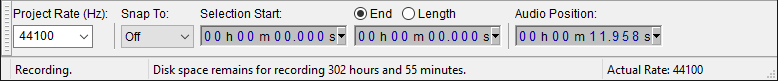

Recording length
The disk space needed for recording depends on the quality (sample rate and bit depth/sample format) at which you record.
Recording time/disk space remaining
When recording, the audio data is written to your hard disk. For example, if you just press the red Record button without having yet saved a Project, it's written to Audacity's temporary folder. Therefore, the amount of time you can record for is limited by the available disk space on the drive you are writing to. Audacity lets you know the amount of time you can record for based on that remaining space, giving a clear indication in the Status Bar at the bottom of the screen as to how much time you can record for:
- 
The time remaining depends on the current space on the drive, and on the quality (sample rate and sample format/bit depth) at which you are recording.
Although there are rarely problems if you record to Audacity's temporary folder and then save the recording as an Audacity Project, it may be preferable if you're intending to save a Project to save an empty Project before you start recording, with the command. That way, the recorded data will be saved to a permanent location in the Project's _data folder. When the recording is over, and now and again during editing, use (not ) to update the Project.
Increasing disk space for longer recordings
To get more recording time:
- Obviously, free up some more disk space. One good way to do that is to ensure you delete your old Audacity Projects (the .aup and any .aup.bak files and the _data folders) as soon as you've finished the Project and are sure you will not need to export any more files from it.
- Save the Project you're starting (or change the location of Audacity's temporary folder) to a disk with more space on it. The location of Audacity's temporary folder can be changed on the Directories tab of Preferences.
- Audacity only uses uncompressed (so lossless) PCM audio data for recording and editing, but the amount of disk space consumed can be reduced by changing the following settings in Preferences:
- on the Devices tab, record in mono instead of stereo. This halves the disk space used.
- on the Quality tab, reduce the Default Sample Format (bit depth) from 32-bit float to 16-bit, which again halves the disk space used. In speech recordings you may also be able to reduce the Default Sample Rate without significantly affecting the quality. Generally for music, leave the Sample Rate at 44100 Hz, but if 22050 Hz gives acceptable quality, it takes only half the disk space of 44100 Hz.
- Note that because unlimited undo is available in an Audacity session, editing a project itself uses disk space. To reduce the space a project is taking, , exit Audacity and relaunch it. This will clear out the space being used by the Undo mechanism. Alternatively, leave the project open, click and discard the Undo levels you do not need.
- 44100 Hz, 32-bit, stereo = 20 MB of space per minute. 44100 Hz and 32-bit are Audacity's default quality settings
- 44100 Hz, 16-bit, stereo = 10 MB per minute. CD quality
- 22050 Hz, 8-bit, mono = 1.25 MB per minute. This would be generally acceptable for speech recordings from lower quality sources
Note that reducing the sample rate will reduce the audio frequency limit. 44100 Hz gives a theoretical maximum of less than 22050 Hz that can be captured. A sample rate of 22050 Hz gives you less than 11025 Hz. For speech, you can take out the high frequencies without much loss of intelligibility. Likewise, reducing the bit depth reduces the dynamic range of the audio. For example, 16-bit gives a whopping 96dB of dynamic range. 8-bit recording reduces dynamic range to 48dB. A 22050 Hz, 8-bit recording would rival the sound of a good quality cassette tape.
Note that disk space usage above relates solely to the size of audio data held by Audacity, not to the size of audio files exported from it. You need this space to record and edit, but if you do not save an Audacity Project, the temporary data is deleted and the space released as soon as you exit Audacity.
Long recordings
Audacity stores samples as 64-bit values (even on 32-bit machines); therefore there is no inherent 32-bit limitation that recordings may not exceed 2^31 samples in length (which is for example just over 13.5 hours at 44100 Hz sample rate).
44100 Hz now offers a theoretical maximum recording length of a mere 58 billion hours or more than 6.6 years (if you have the disk space).